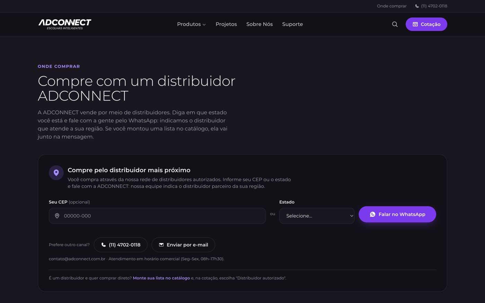
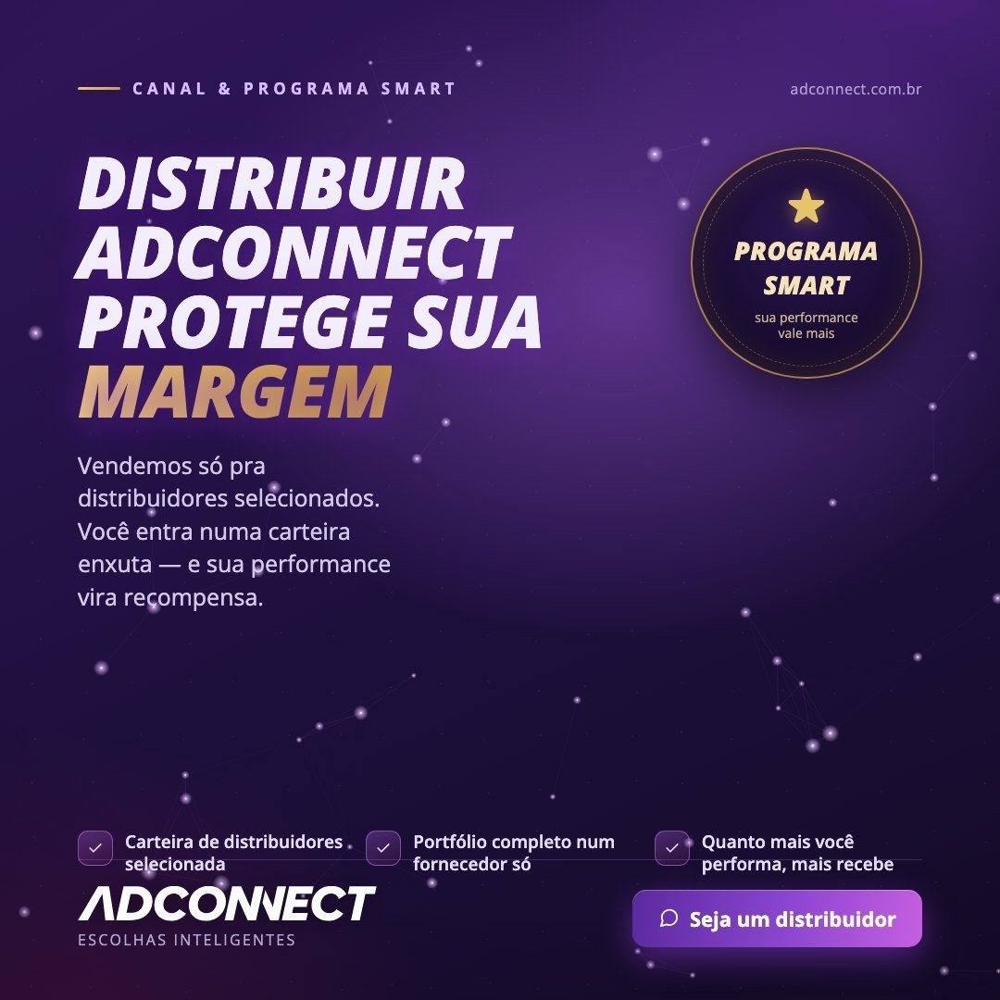
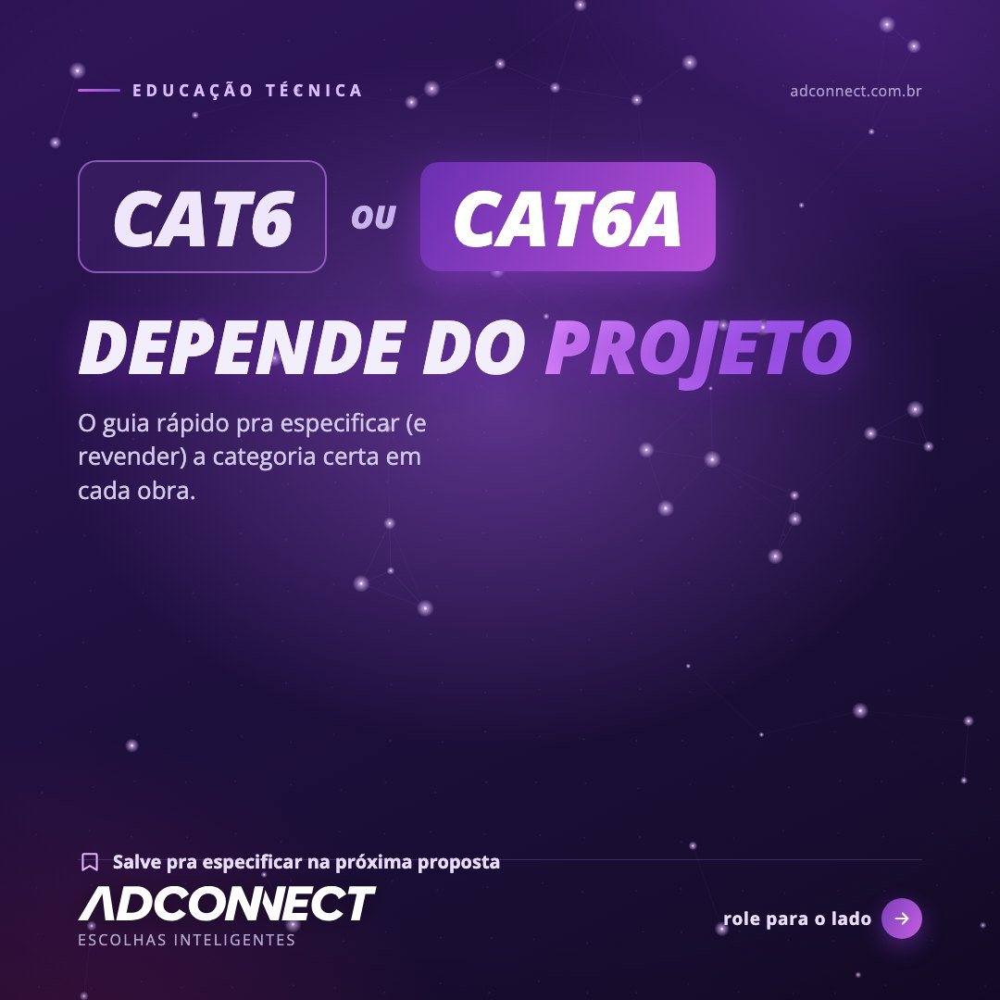
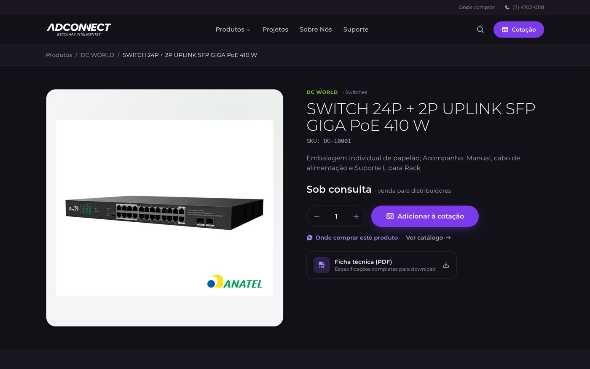

1 · Relacionamento com unidades e parceiros
Ser a solução lembrada quando o vendedor do parceiro tem várias para oferecer
A vaga pede: relacionamento próximo com as unidades e filiais da Sankhya, com visitas, reuniões e acompanhamento contínuo, para que a Flowbiz seja lembrada e indicada no cross-sell.
- Como gestor de contas, cuidei de uma carteira de distribuidores: liguei, visitei e marquei reuniões com os diretores, e batemos a meta mensal de vendas da carteira em todos os meses.
- Reduzi o churn em 15% e aumentei o ticket médio em 20% com ações personalizadas para cada distribuidor e campanhas baseadas em dados.
- Estruturei o pipeline no Agendor (CRM) e fazia relatórios de desempenho por conta, com market share e LTV, a base de qualquer conversa de resultado com o parceiro.
- É a mesma lógica das unidades Sankhya: quem vende tem várias soluções na mão, e o trabalho é fazer a sua ser a primeira lembrada.



2 · Programa de parceiros e incentivo
Um programa que fala a língua de quem revende
A vaga pede: manter e fortalecer o programa de canais de agências e criar campanhas e rankings de incentivo para parceiros e unidades.
- Fiz crescer 30% o Smart Adconnect, o programa de fidelização dos distribuidores, com ações personalizadas e comunicação feita para quem revende.
- Na comunicação do programa, o título fala da margem do parceiro, não do produto: é isso que faz o distribuidor prestar atenção.
Caso: campanha de programação de compra com distribuidores
Objetivo: levar distribuidores da base e prospects a fechar o plano de compras dos meses seguintes.
Canais: régua de e-mail no RD Station e anúncios pagos nas redes sociais.
Testes A/B: assunto do e-mail, criativo do e-mail e anúncios. Em cada um fiquei com a versão vencedora e montei o resto da régua a partir dela.
Resultado: batemos os 20% de fechamento dentro do mês, com ROI positivo de cerca de 20%.

3 · Capacitação e enablement
Dar ao vendedor do parceiro um argumento claro para cada cliente
A vaga pede: apoiar a capacitação dos times das unidades sobre a proposta de valor da Flowbiz e desenvolver propostas personalizadas com o time interno.
- Fiz visitas, promotoria e treinamentos para os distribuidores parceiros, para apoiar a venda dos produtos na ponta.
- Traduzo dados de engenharia em fichas técnicas e roteiros comerciais de mais de 150 produtos, para que distribuidores e vendedores tenham um argumento claro para cada cliente.
- Criei um gerador de propostas que puxa a proposta do CRM e aplica a identidade visual da empresa.



4 · Presença no campo
Gosto de estar presente: visita, reunião e feira
A vaga pede: gosto por estar presente (visitas, eventos e networking), apoio aos encontros regionais com as unidades, representação da Flowbiz em eventos e disponibilidade para viagens.
- Na NZ Representações vendi no campo para construção, agricultura, mineração e transporte, com visitas, feiras e acompanhamento de todo o ciclo, da prospecção ao pós-venda.
- Moro em Cotia, na Grande São Paulo, e tenho disponibilidade para o modelo híbrido, com 3 dias presenciais.
5 · Marketing digital, automação e e-commerce
Relacionamento, fidelização e recompra com a própria base: eu já faço isso
A vaga pede: familiaridade com marketing digital e e-commerce, para conversar com agências, meios de pagamento e plataformas de e-commerce.
- Criei do zero as réguas de nutrição e automação no RD Station que levaram a base ativa de 150 para 550 clientes (+266% de alcance), com foco em retenção e cross-sell.
- Construí uma ferramenta própria de e-mail marketing com a API do Brevo: campanhas, calendário, segmentos e relatórios.
- Crio e gerencio campanhas de Google Ads, Meta Ads e LinkedIn Ads e acompanho KPIs de funil (CAC, LTV, conversão) em dashboards usados pela diretoria.
- Fundei e geri a Forcoming, e-commerce de tênis (2020 a 2022): mais de R$ 90 mil de faturamento bruto com margem média de 35%, guiado por ROAS, margem e CAC.


6 · IA e ferramentas próprias
Mão na massa: eu planejo, executo e construo a ferramenta
- Uso IA todos os dias (Claude, Gemini) para pesquisa, ideias de campanha e primeiras versões de texto, sempre revisadas por mim.
- Construí com Claude Code a plataforma interna de marketing usada por toda a empresa: aprovação de conteúdo, gerador de propostas, e-mail marketing e painel de resultados.
- Entreguei 7 estratégias completas de go-to-market em 14 dias.